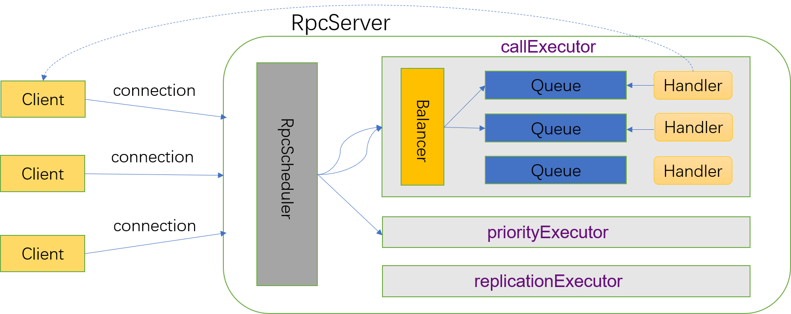

不管是RegionServer还是HMaster在启动的时候都会启动RPC服务，比如RegionServer在启动的时候就会实例化RSRPCServices对象，其中会启动一个RpcServer，默认是基于Netty实现的NettyRpcServer。HBase RPC的流程框架如下：

其中各个Executor用于执行具体请求逻辑，其类继承关系图如下：
抽象类RpcExecutor封装了大部分的属性和方法，最主要的两个属性是用于暂存请求的队列和处理请求的handler。一个handler是一个线程，数量由配置参数hbase.regionserver.handler.count决定，默认为30。队列的数量为handlerCount * hbase.ipc.server.callqueue.handler.factor(0~1.0f之间)，所以队列数量是小于等于handler数量。在启动RpcServer的过程中会调用startHandlers()方法启动Handler线程，同时每个Handler线程会绑定到某个队列上。
BalancedQueueRpcExecutor实现了抽象的dispatch()方法，主要是利用QueueBalancer会请求投递到RpcExecutor的某个队列中。QueueBalancer就是一个负载均衡器，当前主要有一个实现RandomQueueBalancer，顾名思义就是随机选择一个队列进行投递。
FastPathBalancedQueueRpcExecutor继承自BalancedQueueRpcExecutor，它有一个fastPathHandlerStack属性，该属性中保存了空闲的Handler线程（对应的队列中没有未处理的请求）。在分发请求时，如果fastPathHandlerStack不为空，则从中取出一个handler，直接分配请求，这样就避免了入队和出队操作，提高了效率。
队列也有三种类型：
- fifo: 普通的队列，使用LinkedBlockingQueue类
- deadline: 优先级队列，相同优先级的元素遵循fifo，使用BoundedPriorityBlockingQueue类（看代码不算一个高效的实现）
- codel: 控制时延队列。如果在过去codelInterval时间内，最小时延（当前时间-请求接受时间）大于阈值codelTargetDelay，则认为当前已经过载（isOverloaded），此时如果待分发的请求时延已经超过2*codelTargetDelay，则丢弃该请求。此外，如果队列的使用率大于阈值lifoThreshold，则会采用filo代替fifo.